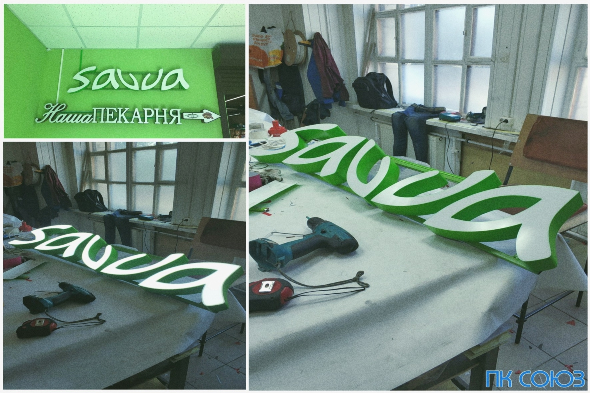
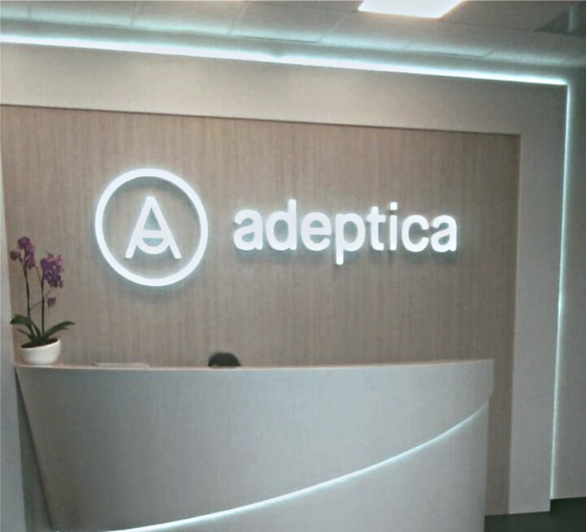
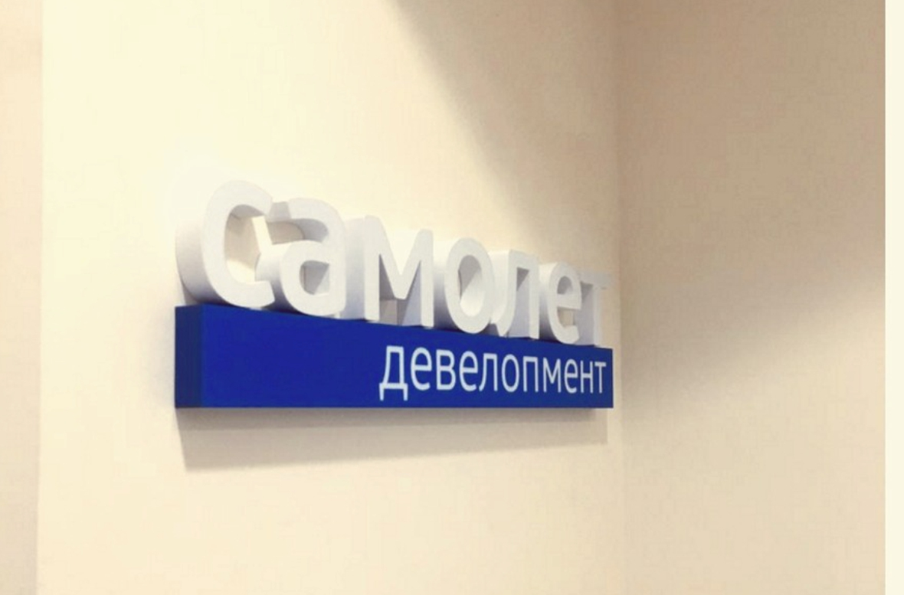

Повысить имидж компании можно интерьерной вывеской. Как правило такие вывески можно увидеть в офисах, точках продаж и иных местах. Такая реклама находится под пристальным вниманием, поэтому она должна быть качественной и уникальной, чтобы привлечь, создать первое положительное впечатление и большую заинтересованность потенциального клиента.

Существуют следующие виды интерьерных вывесок:
- световой логотип
- объемные буквы
- интерьерные консоли
- вывески на держателях
- композитные вывески
Вывески делятся на два типа:
Яркие СВЕТОВЫЕ вывески - самые распространенные.
Имеют разные варианты подсветки сверхъяркими светодиодами (лицевая и задняя). Более выделяются на фоне не световых и имеют низкое энергопотребление.


НЕ СВЕТОВЫЕ вывески.
Обычно используются внутри помещений или при оформлении
хорошо освещенных витрин.
Преимущество таких вывесок - скорость и изготовление их
из различных материалов (металл, стекло, дерево и т. д.)